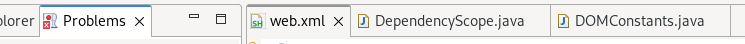
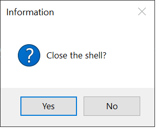

Platform Changes
org.eclipse.jface.dialogs.MessageDialog has been updated to not use icons for user facing dialogs of type QUESTION, QUESTION_WITH_CANCEL and CONFIRM
to align with the UI guidelines regarding such dialogs for the various operating systems.
SWT Changes
CTabFolder now has a new API setSelectionBarThickness(int thickness) that allows to set the thickness of the highlight bar in the selected tab.
By default a highlight bar is now drawn in the selected tab. You can switch to the old look without highlight bar by using CTabFolder#setSelectionBarThickness(0).
Old look and feel:

New look and feel:
MessageBox now has a new API setButtonLabels(Map<Integer, String> labels) that allows to configure the text on the buttons.
Old behavior:
New behavior: You can now set custom text for the buttons using MessageBox#setButtonLabels(Map.of(SWT.YES, "Close")):